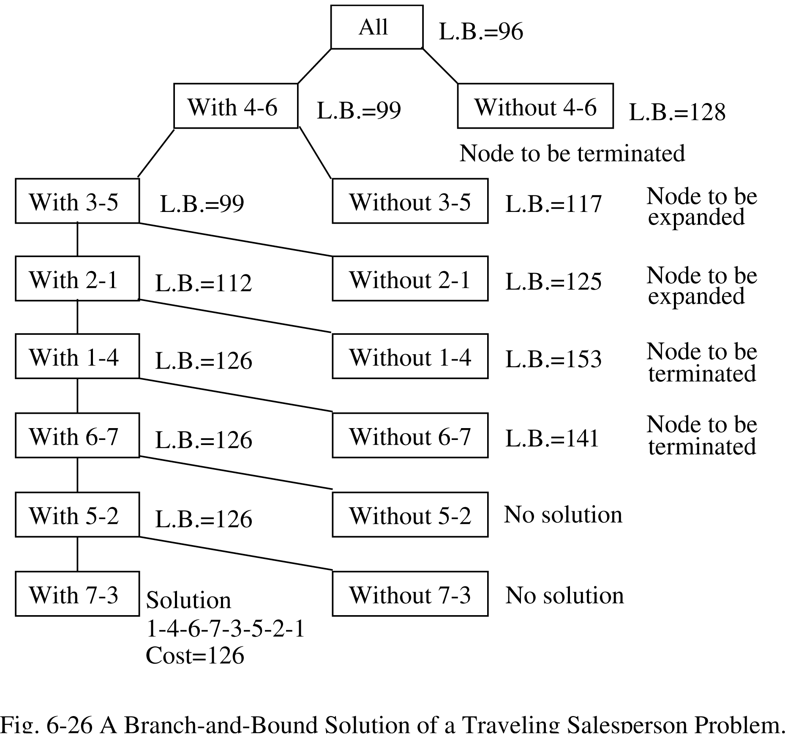

1-4-6-7-3-5-2-1 tour, cost 126, from a 7×7 matrix on paper.考試目標：用手跑一遍 branch-and-bound 搜尋——先把成本矩陣縮減出一個 lower bound，再順著 TSP 決策樹一路走到最佳 tour。這就是第 1 課那四種策略辦不到的事：它要的是最佳解，不是隨便找一個解就交差。你的實際目標：能在紙上從一個 7×7 矩陣，把 1-4-6-7-3-5-2-1 這條 tour、成本 126 整個重現出來。Before any machinery, three plain-English ideas. Read these once and the rest of the lesson is just bookkeeping.先別急著看那些操作，這裡有三個白話觀念。把這三個搞懂，這一課剩下的部分其實就只是在記帳而已。
Feasibility vs optimization. A feasibility (or decision) problem asks "is there any valid answer?" — find one solution that works, or say "none exists." An optimization problem asks for the best valid answer by some measure (cheapest, shortest, most profit). The gap matters: finding a tour is easy; finding the cheapest tour, and proving nothing cheaper exists, is the hard part.Feasibility 跟 optimization 的差別。Feasibility（或 decision）problem 問的是「到底有沒有合法的解？」——找出一個能用的解，或者直接說「沒有」。Optimization problem 就更進一步，要你按某個標準找出最好的那個解（最便宜、最短、利潤最大）。這個差別很關鍵：隨便找一條 tour 很簡單；難的是找出最便宜那條，還要能證明沒有更便宜的存在。
The Travelling Salesperson Problem (TSP). A salesperson must visit every city exactly once and return to the city they started from. Each leg from one city to another has a cost (think distance or price). The goal: find the cheapest such round-trip. One full round-trip — start city, through every other city once, back to start — is called a tour. TSP is an optimization problem, and a famously hard one (NP-complete).Travelling Salesperson Problem (TSP)。有個推銷員要把每座城市都剛好走過一次，最後再回到出發的那座城市。每段路（從一座城市到另一座）都有一個 cost，你可以想成距離或票價。目標就是：找出最便宜的這種來回行程。這樣一趟完整的行程——從起點出發、其他城市各經過一次、再繞回起點——就叫一條 tour。TSP 是 optimization problem，而且是出了名的難（NP-complete）。
The cost matrix. We write the costs in a grid called a cost matrix: the entry in row i, column j is the cost of going from city i to city j. The diagonal (going from a city to itself) is ∞ — you can't stay put. Here is a tiny 3-city example you can read at a glance:Cost matrix。我們把這些 cost 排成一個方格表，叫 cost matrix：第 i 列、第 j 行那一格，就是從城市 i 走到城市 j 要花的 cost。對角線（自己走到自己）填 ∞，因為你不能待在原地不動。底下這個 3 座城市的小範例，你一眼就能看懂：
A tour like 1 → 2 → 3 → 1 costs 7 + 9 + 6 = 22; the tour 1 → 3 → 2 → 1 costs 3 + 2 + 4 = 9. With 3 cities there are only two tours to compare, but the number of tours explodes as cities grow — so we need a smarter method than listing them all.舉例來說，1 → 2 → 3 → 1 這條 tour 的 cost 是 7 + 9 + 6 = 22；1 → 3 → 2 → 1 則是 3 + 2 + 4 = 9。只有 3 座城市時，總共也才兩條 tour 要比，很輕鬆。不過城市一多，tour 的數量會爆炸性成長——所以我們得想個比「全部列出來硬比」更聰明的辦法。
Branch-and-bound, in plain terms. Instead of listing every tour, we split the choices into a tree: each branch is a yes/no decision like "does the tour use the leg 4→6 or not?" That's the branch. For every branch we compute a lower bound — the cheapest any complete tour inside that branch could possibly cost, even in the best case. That's the bound. The payoff: if a branch's lower bound is already worse than the best complete tour we've found so far, no tour in it can win, so we throw the whole branch away unopened (we "prune" it) without exploring it. That pruning is what lets us skip most of the tree yet still prove our answer is optimal.Branch-and-bound 白話版。我們不把每條 tour 都攤開來列，而是把所有選擇拆成一棵樹：每個分叉就是一個是非題，像是「這條 tour 要不要走 4→6 這一段？」這個動作就是 branch。接著對每個分支算一個 lower bound——也就是說，這個分支裡再怎麼挑、挑到最好，任何一條完整 tour 至少也得花掉多少 cost。這就是 bound。重點來了：如果某個分支的 lower bound 已經比我們目前手上最好的那條完整 tour 還貴，那這分支裡再怎麼找都贏不了，所以我們連打開都不打開，整個分支直接砍掉（這就是 prune，剪枝），根本不去碰它。正是靠這個 pruning，我們能跳過樹的一大半，卻還是能證明最後的答案就是最佳解。
Best-first search, in one line: keep a pool of live nodes (nodes you've reached but not yet expanded), and always expand next the one with the smallest bound — the most promising one — rather than blindly going deep (DFS) or level-by-level (BFS). Branch-and-bound is exactly best-first search (Lesson 1) plus a bound. DFS/BFS/hill-climbing/best-first all stop at the first goal they reach — fine for feasibility, useless for optimization, because the first tour found is rarely the cheapest. Branch-and-bound fixes this with two moves:Best-first search 一句話講完：手上有一堆 live node（已經走到、但還沒展開的節點），每次都挑 bound 最小的那個——也就是最有希望的——優先展開，而不是悶著頭往深處鑽（DFS）或一層一層慢慢掃（BFS）。Branch-and-bound 其實就是 best-first search（第 1 課）再加上一個 bound。DFS／BFS／hill-climbing／best-first 這些都是一碰到第一個 goal 就收工——拿來做 feasibility 沒問題，但拿來做 optimization 就不行了，因為第一條找到的 tour 通常不是最便宜的那條。Branch-and-bound 靠兩個動作解決這個問題：
LB ≥ best-so-far — exploring it is pointless because nothing inside it can beat what you already have.考試關鍵句：對 minimization problem 來說，每個 node 身上都帶一個 lower bound；你則把目前找到的最佳可行 cost 拿來當 upper bound。只要某個 node 的 LB ≥ best-so-far，就直接 prune 掉——去看它根本是浪費時間，因為它裡面沒東西贏得過你手上已經有的那條。How do we get a lower bound for "all tours"? A reduced cost matrix is what you get by subtracting a constant from each row, and then from each column, so that every row and every column contains at least one 0. Here is the intuition for why the total you subtract is a valid lower bound:那「所有 tour」的 lower bound 要怎麼算？做法是先把矩陣縮一縮：每一列減掉一個常數、每一行也減掉一個常數，減到每一列、每一行都至少出現一個 0，這樣得到的就是 reduced cost matrix。為什麼你減掉的總量剛好就是一個合法的 lower bound？直覺是這樣：
Every tour must leave each city exactly once — so it uses exactly one entry from each row. If the cheapest way out of city i costs m, then every tour pays at least m for leaving city i, no matter which tour it is. Subtracting m from row i just sets that unavoidable floor aside; it lowers every tour's cost by the same m, so it never changes which tour is cheapest. The same argument works column-by-column (every tour must enter each city exactly once). Add up everything subtracted and you have a cost every tour must pay — a lower bound. Concretely:每條 tour 都一定要從每座城市剛好出去一次——換句話說，每一列剛好會用到一格。假設離開城市 i 最便宜的走法要 m，那不管是哪條 tour，離開城市 i 至少都得付 m。所以把第 i 列整列減掉 m，只是把這個躲不掉的固定成本先抽出來放一邊；每條 tour 的 cost 都同樣少了 m，哪一條最便宜的排名完全不會變。同樣的道理對每一行也成立（每條 tour 也一定要進入每座城市剛好一次）。把減掉的量全部加起來，就是每一條 tour 都躲不掉的 cost——這就是 lower bound。具體步驟是：
Small worked example — a 3-city matrix (∞ on the diagonal):來個小範例實際算一次——一個 3 座城市的矩陣（對角線是 ∞）：
| i \ j | 1 | 2 | 3 | row min |
|---|---|---|---|---|
| 1 | ∞ | 7 | 3 | (−3) |
| 2 | 4 | ∞ | 9 | (−4) |
| 3 | 6 | 2 | ∞ | (−2) |
After row reduction each row has a zero, and the matrix becomes:做完列縮減後，每一列都有了一個零，矩陣長這樣：
| i \ j | 1 | 2 | 3 |
|---|---|---|---|
| 1 | ∞ | 4 | 0 |
| 2 | 0 | ∞ | 5 |
| 3 | 4 | 0 | ∞ |
| col min | (0) | (0) | (0) |
Column check (do this every time): col 1 already has a 0 (from row 2), col 2 has a 0 (from row 3), col 3 has a 0 (from row 1) → all three columns are already satisfied, so we subtract nothing more. Total subtracted = 3 + 4 + 2 = 9 → lower bound 9. This same trick is what produces the TSP bound of 96 below.檢查每一行（每次都要做）：第 1 行已經有 0（來自第 2 列）、第 2 行有 0（來自第 3 列）、第 3 行有 0（來自第 1 列）→ 三行都已經滿足條件，所以不用再多減。減掉的總和 = 3 + 4 + 2 = 9 → lower bound 9。下面 TSP 的 bound 96，靠的就是這同一招。
Seven cities. Here is the full instance — Table 6-3, the 7×7 cost matrix. Entry (i, j) is the cost of arc i → j; the diagonal is ∞ (no self-loop). This is the same kind of grid as the 3-city toy above, just larger:這次有七座城市。完整題目在這——Table 6-3，一個 7×7 的 cost matrix。第 (i, j) 格就是 arc i → j 的 cost；對角線一樣是 ∞（不能 self-loop）。它跟上面那個 3 城市小範例是同一種表，只是大了一點：
| i \ j | 1 | 2 | 3 | 4 | 5 | 6 | 7 |
|---|---|---|---|---|---|---|---|
| 1 | ∞ | 3 | 93 | 13 | 33 | 9 | 57 |
| 2 | 4 | ∞ | 77 | 42 | 21 | 16 | 34 |
| 3 | 45 | 17 | ∞ | 36 | 16 | 28 | 25 |
| 4 | 39 | 90 | 80 | ∞ | 56 | 7 | 91 |
| 5 | 28 | 46 | 88 | 33 | ∞ | 25 | 57 |
| 6 | 3 | 88 | 18 | 46 | 92 | ∞ | 7 |
| 7 | 44 | 26 | 33 | 27 | 84 | 39 | ∞ |
Table 6-3 — cost matrix for the 7-city TSP (verified against the A05 note).Table 6-3 — 7 座城市 TSP 的 cost matrix（已跟 A05 筆記對過、確認無誤）。
Reduce it exactly as in the 3-city example. First subtract each row's minimum (the cheapest way out of that city): the row minimums are 3, 4, 16, 7, 25, 3, 26, summing to 84. After that, columns 3, 4 and 7 still have no zero, so subtract their minimums 7, 1, 4, summing to 12. The total subtracted is the root lower bound:就照 3 城市範例那套來縮減。先把每一列減掉它的最小值（也就是離開那座城市最便宜的走法）：各列最小值是 3, 4, 16, 7, 25, 3, 26，加起來 84。減完之後第 3、4、7 行還是沒有零，所以再各減掉它們的最小值 7, 1, 4，加起來 12。兩段減掉的總和，就是 root 的 lower bound：
Here is the fully reduced 7×7 matrix — the result of those row and column subtractions. Notice every row and every column now contains at least one 0; those zeros are the candidate arcs we branch on:底下就是完全縮減後的 7×7 矩陣——把上面那些列、行減完之後的結果。注意現在每一列、每一行都至少有一個 0；這些零就是我們等等要拿來分支的候選 arc：
| i \ j | 1 | 2 | 3 | 4 | 5 | 6 | 7 |
|---|---|---|---|---|---|---|---|
| 1 | ∞ | 0 | 83 | 9 | 30 | 6 | 50 |
| 2 | 0 | ∞ | 66 | 37 | 17 | 12 | 26 |
| 3 | 29 | 1 | ∞ | 19 | 0 | 12 | 5 |
| 4 | 32 | 83 | 66 | ∞ | 49 | 0 | 80 |
| 5 | 3 | 21 | 56 | 7 | ∞ | 0 | 28 |
| 6 | 0 | 85 | 8 | 42 | 89 | ∞ | 0 |
| 7 | 18 | 0 | 0 | 0 | 58 | 13 | ∞ |
Choosing the branching arc. We split on a zero-cost arc — including it adds nothing, so the "include" side keeps the bound low, while the "exclude" side is forced to pay the next-cheapest way out. Pick the zero whose exclusion hurts the most.怎麼挑要分支的 arc。我們挑一條 zero-cost（成本為 0）的 arc 來分支——把它納進來不會多花 cost，所以「include」這側 bound 還是壓得很低；可是一旦「exclude」它，這側就被迫改走次便宜的出口。訣竅是：挑那個一旦被排除、代價最大的零。
(i, j), if we exclude arc i→j then the tour can no longer use that free 0 — it must leave city i some other way and enter city j some other way. The cheapest forced detour is:penalty(i,j) = (smallest other entry in row i) + (smallest other entry in column j).32 (the 32 in column 1), smallest other entry in column 6 is 0 (the 0 in row 5) → penalty 32 + 0 = 32.1 (the 1 in column 2), smallest other entry in column 5 is 17 (the 17 in row 2) → penalty 17 + 1 = 18.(i, j) 的零，如果我們排除 arc i→j，那這條 tour 就不能再用這個免費的 0 了——它得改用別的方式離開城市 i，而且還得改用別的方式進入城市 j。最便宜的這個被迫繞路就是：penalty(i,j) =（第 i 列裡其他格的最小值）+（第 j 行裡其他格的最小值）。32（第 1 行那個 32），第 6 行其他格最小是 0（第 5 列那個 0）→ penalty 32 + 0 = 32。1（第 2 行那個 1），第 5 行其他格最小是 17（第 2 列那個 17）→ penalty 17 + 1 = 18。Arc 4-6. Its exclusion penalty is 32 (the largest) — compare arc 3-5, whose penalty is only 17 + 1 = 18. So:是 arc 4-6。把它排除掉的 penalty 是 32（全場最大）——對比一下 arc 3-5，它的 penalty 才 17 + 1 = 18。所以：
What "include arc i→j" does to the matrix (the rule). Once we commit to using arc i→j, city i has now been used as a departure and city j as an arrival, so neither can be used that way again: delete row i and column j. We also set the return arc j→i to ∞ to forbid the 2-city sub-cycle i→j→i (a tour must visit all cities, not loop back early). Then re-reduce the shrunken matrix — if a row or column now has no zero, subtract its minimum, and that extra amount adds to the bound.「include arc i→j」對矩陣做了什麼（規則）。一旦我們決定要用 arc i→j，城市 i 就已經當過出發點、城市 j 也當過抵達點了，這兩個身分都不能再用第二次：所以把第 i 列跟第 j 行刪掉。同時把回頭的 arc j→i 設成 ∞，禁止 i→j→i 這種兩城市的 sub-cycle（一條 tour 要走遍所有城市，不能提早繞回去）。接著把縮小後的矩陣重新縮減一遍——如果某列或某行現在沒有零了，就減掉它的最小值，多減的這個量就加到 bound 上。
6→4 to ∞. In the leftover 6×6 matrix every column still has a zero, but row 5 no longer does — its entries are 3, 21, 56, 7, ∞, 28 (columns 1,2,3,4,5,7), whose minimum is 3. Subtract that 3, and the bound becomes 96 + 3 = 99.Include 4-6：刪掉第 4 列（4 已經當過出發點）跟第 6 行（6 已經當過抵達點），並把 arc 6→4 設成 ∞。剩下的 6×6 矩陣裡，每一行都還有零，但第 5 列沒有了——它剩下的格子是 3, 21, 56, 7, ∞, 28（對應第 1,2,3,4,5,7 行），最小值是 3。減掉這個 3，bound 就變成 96 + 3 = 99。Here is the complete decision tree the trace produces — Fig. 6-26. Every bound the trace below quotes (96, 99, 128, 117, 112, 125, 126, 153, 141) is read directly off this figure, and the optimal tour with its cost sits at the bottom of the left spine:這就是整段跑下來得到的完整決策樹——Fig. 6-26。下面提到的每個 bound（96、99、128、117、112、125、126、153、141）都是直接從這張圖上讀出來的，而最佳 tour 跟它的 cost，就在左側主幹的最底下：

Fig. 6-26 — branch-and-bound tree for the 7-city TSP. Left spine = "with arc" (kept), right boxes = "without arc" (terminated / no solution). Optimal tour 1-4-6-7-3-5-2-1, cost 126.Fig. 6-26 — 7 座城市 TSP 的 branch-and-bound 樹。左側主幹是「with arc」（保留下來的那側），右側方塊是「without arc」（終止／無解）。最佳 tour 1-4-6-7-3-5-2-1，cost 126。
Now follow the left spine — at each step include the chosen arc (cheap side) and read off the bound; the "without" branch is the prune/shelve side:現在順著左側主幹走一遍——每一步都把選中的 arc 納進來（便宜的那側），然後讀出 bound；至於「without」分支，就是被 prune／擱置的那側：
1 + 17 = 18 (smallest other entry in row 3 is 1, in column 5 is 17), beating the next-best zero (2,1) at 17 + 0 = 17 — so 3-5 is the next branch. Repeat this on each new reduced matrix and the whole spine 4-6, 3-5, 2-1, 1-4, 6-7, 7-3 falls out.每一步的下一條 arc 怎麼挑（每一層都用同一條規則）。會挑 3-5、再挑 2-1、再挑 1-4……這不是憑空變出來的——你只是在當下那張縮減矩陣上，重新跑一次 exclusion-penalty 規則，挑 penalty 最大的那個零來分支，就跟你在 root 挑 4-6 一模一樣。拿第二層當例子（也就是 include 4-6 之後那張矩陣）：零落在 (3,5) 的 penalty 是 1 + 17 = 18（第 3 列其他格最小是 1、第 5 行其他格最小是 17），贏過次高的零 (2,1) 的 17 + 0 = 17——所以下一刀就砍 3-5。在每張新的縮減矩陣上重複這個動作，整條主幹 4-6、3-5、2-1、1-4、6-7、7-3 就一路掉出來了。1→2 = ∞) wipes out the only zeros that rows 1 and 5 had — row 1's lone zero lived in column 1, now gone, so its surviving entries 83, 9, 50 force a −9; and row 5's surviving entries 18, 7, 25 force a −4. The re-reduction is 9 + 4 = 13, so 99 + 13 = 112.4→1 = ∞) leaves row 5 with no zero — its surviving entries are 14, 21 (columns 2 and 7), minimum 14. So 112 + 14 = 126, which is exactly the bound shown on the spine.為什麼有些「include」會把 bound 抬高，有些不會。納入一條 zero-cost 的 arc 本身不多花 cost，所以 bound 原則上不變——除非刪掉它的列跟行之後，剩下某一列或某一行沒有零了，逼你重新縮減一次。你多縮的那個量，就是被加上去的。1→2 設成 ∞）時，第 1 列跟第 5 列僅有的那個零都被拔掉了——第 1 列的零本來在第 1 行，刪掉後剩下 83, 9, 50，逼出 −9；第 5 列剩下 18, 7, 25，逼出 −4。重縮就是 9 + 4 = 13，所以 99 + 13 = 112。4→1 設成 ∞）之後，第 5 列沒有零了——它剩下的格子是 14, 21（第 2、7 行），最小值 14。所以 112 + 14 = 126，剛好就是主幹上標的那個 bound。≥ the best complete tour already found (126), so it can never win (e.g. without 1-4, LB 153; without 6-7, LB 141).5→2 is the only remaining legal way to leave city 5 (every other exit from 5 is used up or would close a sub-cycle early), so without 5-2 there is simply no way to complete the tour.右邊那三種結局，定義一下。一個「without」分支最後會落到三種狀態之一：≥ 已經找到的最佳完整 tour（126），永遠贏不了（例如 without 1-4，LB 153；without 6-7，LB 141）。5→2 是離開城市 5 唯一還合法的走法（5 的其他出口不是已被用掉、就是會提早封成 sub-cycle），所以 without 5-2 根本沒辦法把 tour 走完。The "with" arcs accumulated down the spine — 4-6, 3-5, 2-1, 1-4, 6-7, 5-2, 7-3 — stitch into the single Hamiltonian cycle把主幹上一路累積的「with」arc——4-6、3-5、2-1、1-4、6-7、5-2、7-3——接起來，剛好拼成唯一的一個 Hamiltonian cycle
1 → 4 → 6 → 7 → 3 → 5 → 2 → 1. Now verify the 126 yourself by adding the seven arc costs straight from Table 6-3 (the original matrix, not the reduced one):。現在自己驗證一下 126：把七段 arc 的 cost 直接從 Table 6-3（原始矩陣，不是縮減後的那張）加起來：
So cost = 126, and it matches the bound at the bottom of the spine — the tour is fully reconstructed from the matrix alone.所以 cost = 126，正好對上主幹最底下的那個 bound——這條 tour 光靠矩陣就能完整重建出來。
Every shelved "without" branch has a bound ≥ 126 (128, 117→…, 125, 153, 141) or no feasible solution, so none of them can beat 126 — the search is done and 126 is proven optimal. That proof of optimality is exactly what plain best-first search could never give you.每個被擱在一邊的「without」分支，bound 不是 ≥ 126（128、117→…、125、153、141）就是根本無解，所以沒有一個贏得過 126——搜尋到此結束，126 就是已經被證明的最佳解。這種「證明它最佳」的能力，正是單純 best-first search 永遠做不到的。
Knapsack maximizes profit, which the deck flips into a minimization of negative profit. Branch-and-bound there needs the mirror image of the TSP setup: an upper bound from any quick feasible packing, and a lower bound from the fractional relaxation — allow 0 ≤ Xi ≤ 1 and fill greedily by profit density (profit ÷ weight, so the most "profit per kilo" goes in first). Don't worry about reproducing the exact numbers yet — the item profits, weights and the knapsack capacity all arrive next lesson. Just the shape to remember: a feasible packing such as items 1 and 2 gives an upper bound (the deck's −16 — no optimum can be worse than that), the fractional fill gives a lower bound (−18.5, which tightens to −18 since real solutions are integers), and together they box the optimum in −18 ≤ opt ≤ −16. We trace that full tree, with the item table, next lesson.Knapsack 要的是把利潤最大化，而投影片的小技巧是把它翻成最小化負利潤。所以這裡的 branch-and-bound 剛好是 TSP 那套的鏡像：upper bound 來自隨便一個可行的裝法，lower bound 則來自 fractional relaxation——放寬成 0 ≤ Xi ≤ 1，照 profit density（利潤 ÷ 重量，也就是「每公斤能換多少利潤」最高的先塞）由高到低貪婪地塞。那些確切數字現在先別急著去湊——物品的利潤、重量跟背包容量都要到下一課才會給。現在只要記住形狀：一個可行裝法（例如物品 1 跟 2）給你一個 upper bound（投影片寫的 −16——最佳解再怎樣也不會比這更糟），fractional 裝法給你一個 lower bound（−18.5，因為真實解一定是整數，收緊成 −18），兩個一起把最佳解夾在 −18 ≤ opt ≤ −16 中間。整棵樹、連同那張物品表，我們下一課再慢慢跑。
Pick before you read the feedback. Getting it wrong then seeing why builds memory better than re-reading.先選答案，再看解釋。答錯了、再搞懂為什麼錯，這樣記得比重看一遍還牢。
Primary source: R.C.T. Lee, S.S. Tseng, R.C. Chang, Y.T. Tsai — Introduction to the Design and Analysis of Algorithms, Ch 6 §6.7–6.9 (your Alg05 slides, "The Searching Strategies" — branch-and-bound, personnel assignment, TSP). Re-draw the TSP decision tree (Fig. 6-25 / Fig. 6-26) and re-derive the 96 → 99 → … → 126 bounds from Tables 6-3 through 6-7.主要來源：R.C.T. Lee, S.S. Tseng, R.C. Chang, Y.T. Tsai — Introduction to the Design and Analysis of Algorithms，第 6 章 §6.7–6.9（也就是你的 Alg05 投影片，"The Searching Strategies"——涵蓋 branch-and-bound、personnel assignment、TSP）。建議自己把 TSP 決策樹（Fig. 6-25 / Fig. 6-26）重畫一遍，再從 Tables 6-3 到 6-7 把 96 → 99 → … → 126 這串 bound 重新推一次。
See also the Glossary → Ch6 for one-line definitions, and the full chapter note (A05) for every verified matrix and tree.也可以翻 Glossary → Ch6 看一行式定義，或看完整的章節筆記（A05），裡面每個矩陣跟每棵樹都驗證過了。
f(n)=g(n)+h(n) and an admissible h≤h*) and the 0/1-knapsack branch-and-bound trace — upper bound from a feasible packing, lower bound from the fractional relaxation, boxing the optimum in −18 ≤ opt ≤ −16.下一課（第 3 課）會講：A* 演算法（其實就是 best-first 加上 f(n)=g(n)+h(n)，再配一個 admissible 的 h≤h*），還有 0/1-knapsack 的 branch-and-bound——upper bound 來自一個可行裝法，lower bound 來自 fractional relaxation，把最佳解夾在 −18 ≤ opt ≤ −16 之間。📣 I'm your teacher — ask me anything. Want me to hand you the raw 7×7 matrix to reduce from scratch? Confused why "exclude 4-6" costs 32? Want the personnel-assignment trace (optimal cost 70) as extra reps? Just say so.📣 我是你的老師——什麼都可以問。想要我把那個 7×7 矩陣直接丟給你、讓你從頭縮減一次嗎？還是搞不懂「exclude 4-6」為什麼要花 32？想拿 personnel-assignment（最佳 cost 70）多練幾遍嗎？開口就好。
Score this lesson out of 5 to yourself. 4–5 → on to Lesson 3 (A* + knapsack). ≤3 → tell me which question and we drill it.幫自己這一課打個分數（滿分 5）。4–5 分 → 直接前進第 3 課（A* + knapsack）。≤3 分 → 跟我說是哪一題，我們把它練到熟。